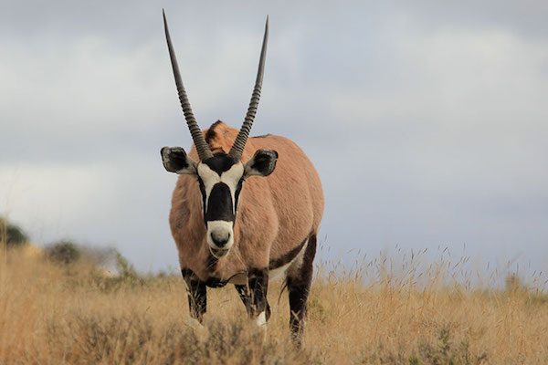

GEMSBOK 🦌
Overview
The **gemsbok** (*Oryx gazella*) is a **large antelope** in the Oryx genus, native to **the arid regions of Southern Africa**, particularly the **Kalahari Desert**. Some authorities previously included the **East African oryx as a subspecies**, though it is now classified separately.
Symbolism & Name Origins
The **gemsbok is proudly depicted on Namibia’s coat of arms**, signifying its importance in the region. The current **population of gemsbok in Namibia** is estimated at **373,000 individuals**.
The name **"gemsbok"** in English is derived from **Afrikaans gemsbok**, which itself **comes from the Dutch name for the male chamois** (*gemsbok*). While **the chamois and oryx** share **some superficial similarities in facial patterns**, they **are not closely related biologically**.
WHERE WILL YOU FIND THEM?
You will find the gemsboks **just beyond Panda Canyon**.